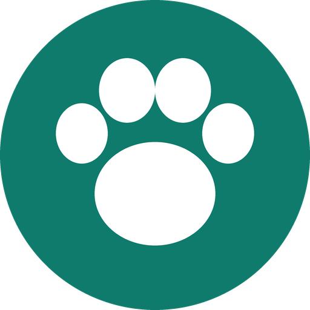

Meu Pet
Vacinas, vermífugos, banhos, exames, consultas, medicamentos e gastos dos seus pets em um só lugar.
🐶🐱 Vários petsCachorros, gatos e outras espécies, com foto, raça, cor, nascimento e dados do tutor.
💉 Saúde em diaHistórico de vacinas, vermífugos, antipulgas, exames, consultas e peso.
⏰ LembretesAvisos da próxima dose e do horário de cada remédio em tratamentos contínuos.
💰 GastosResumo por mês, por categoria e por pet.
📊 PlanilhaExportação dos dados para Excel ou Google Planilhas.
☁️ BackupCópia automática numa pasta do seu próprio Google Drive.
Seus dados são seus
As informações dos pets ficam no seu celular e o backup vai para uma pasta criada pelo app no seu Google Drive — o Meu Pet não tem acesso aos demais arquivos do seu Drive. Se você criar uma família, os pets são compartilhados apenas com os membros dela. Veja os detalhes na Política de Privacidade.